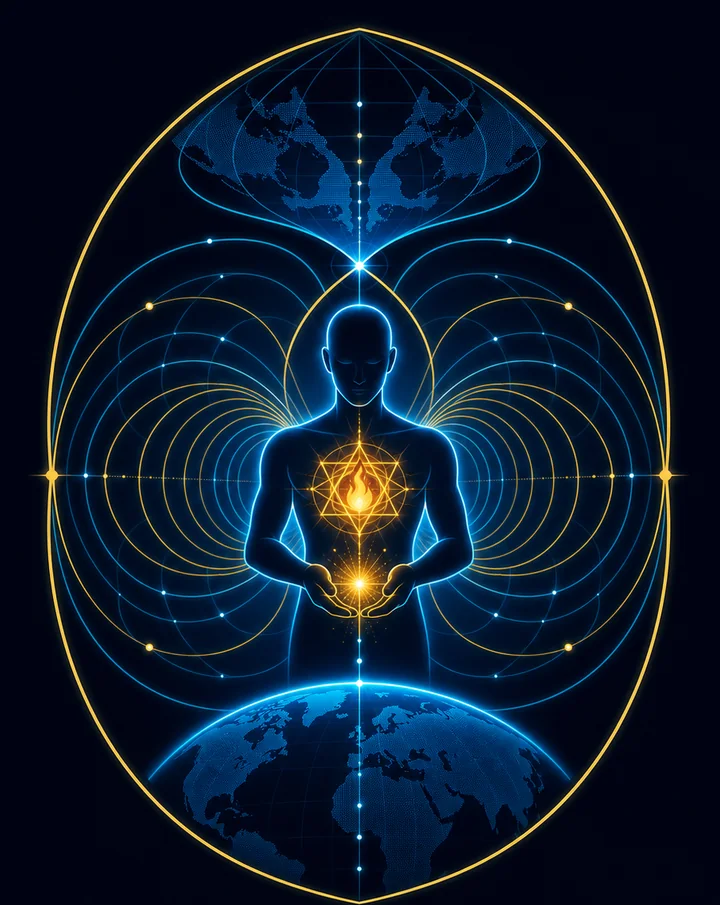
Promethean Theoria
“The instrument of clearer perception is available to you, but developing it is your work.”
“You’ve been given something valuable—the means to see farther. It doesn’t have to arrive fully assembled to be a complete gift.”
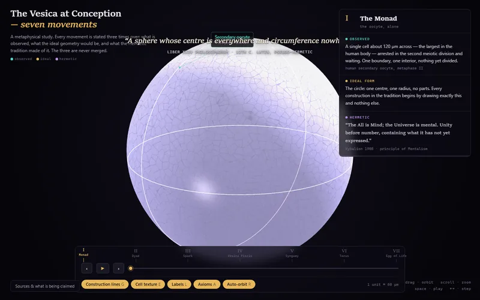
The Vesica at Conception — seven movements
A metaphysical study of fertilisation in seven movements, from the Monad — the oocyte alone —
to the Egg of Life. Every movement is told three times and never merged: observed biology with
citations, the ideal geometry, and what the Hermetic tradition made of it.
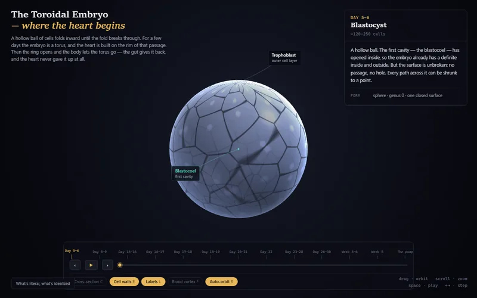
The Toroidal Embryo — where the heart begins
Weeks 1–4 of human embryology in interactive 3D: a hollow ball of cells folds inward until,
for a few days, the embryo is genuinely a torus — and the heart is built on the rim of that passage.
Scrub ten stages from blastocyst to the first beat; a notes panel keeps textbook fact separate from idealized form.
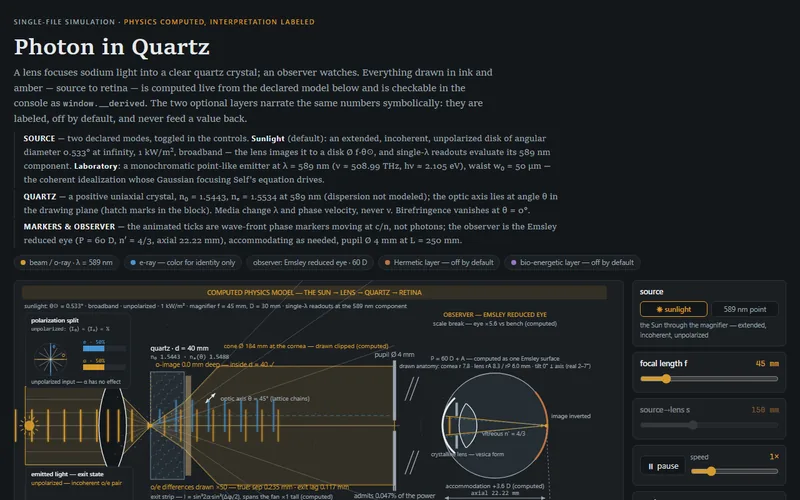
Photon in Quartz — computed optics, labeled interpretation
A complete optical bench drawn live: sodium light focused into a birefringent quartz crystal, split
into o- and e-rays, and traced all the way to a model human eye. Every number on screen is computed
from the declared physics; two symbolic overlay layers stay off until you ask, and never feed a value back.
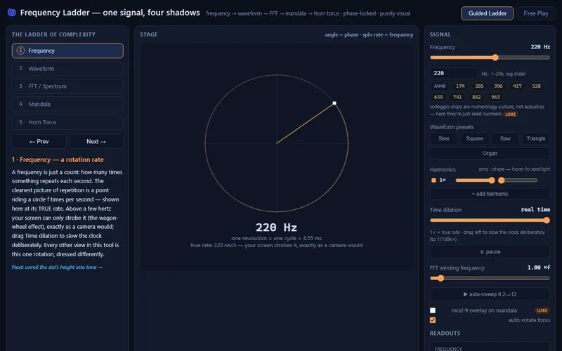
Frequency Ladder — one signal, four shadows
One signal seen four ways, all phase-locked: a spinning point unrolls into a waveform, the FFT recovers
its recipe, the spectrum blooms into a polar mandala, and a horn torus carries the whole thing in 3D.
Climb the guided five-rung ladder, or open Free Play and stack harmonics yourself.
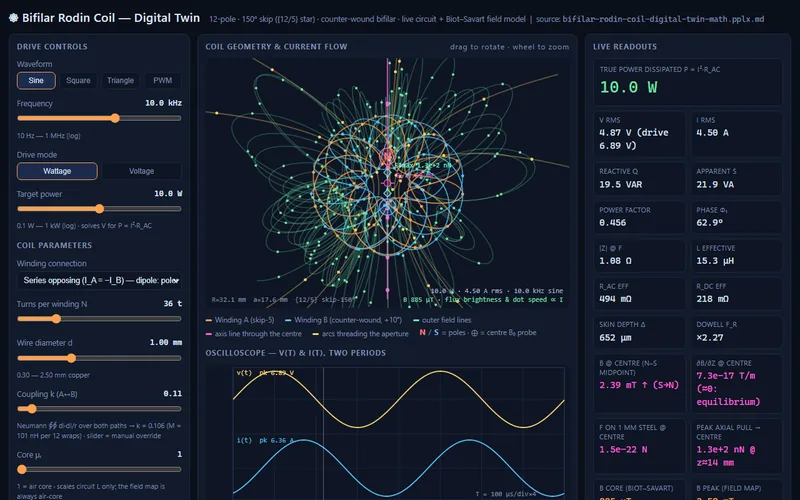
Bifilar Rodin Coil — digital twin
A 12-pole, counter-wound bifilar Rodin coil driven like bench hardware: set waveform, frequency and
power, then read the oscilloscope, the impedance sweep, and a numerically integrated Biot–Savart
field map. The model equations — and an honest section on what to trust — are right on the page.
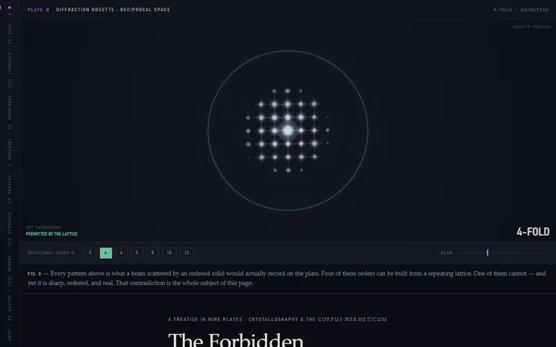
The Forbidden Symmetry — mineral lattices & the Platonic solids
A treatise in nine interactive plates, spanning crystallography and the Corpus Hermeticum:
why exactly five Platonic solids exist, which of them can build matter, why five-fold symmetry is
impossible in any repeating crystal — and the 1982 aluminium alloy where it turned up anyway.
Every claim wears a chip: theorem, measured, tradition, or false.
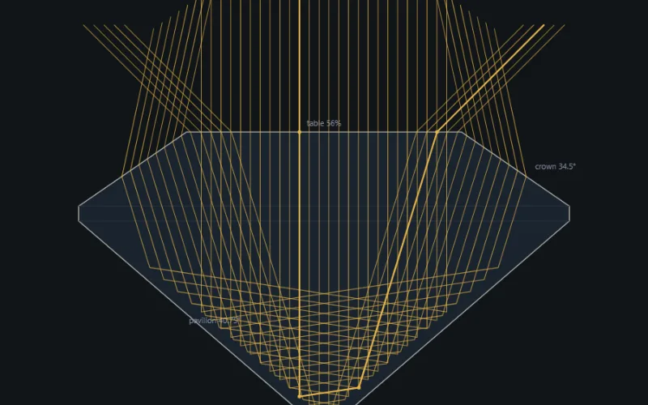
The Cut and the Critical Angle — 37 cuts, computed live
A magnifying glass over a gemstone, and every bounce inside it ray-traced: total internal
reflection, Fresnel splitting, spectral fire and quartz's double refraction, computed from the
declared facet geometry across the full cut roster — brilliants, step cuts, antiques, and the
talismanic register (Vogel, Merkaba, Platonic solids) labeled and provably isolated from the physics.
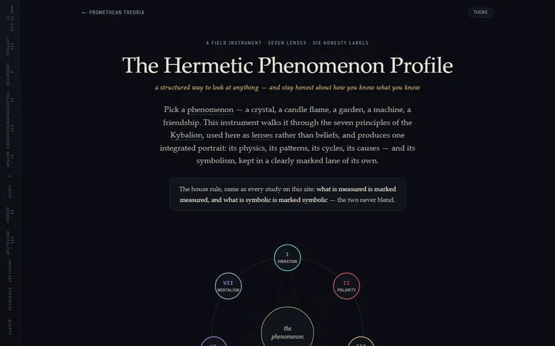
The Hermetic Phenomenon Profile — a field instrument
Profile anything — a crystal, a flame, a garden, a machine — through the seven Kybalion
principles used as lenses, not beliefs. Six honesty labels keep measurement and symbolism
in separate lanes, a plain-words exposé teaches the whole method in six moves, and every
technical term carries a hover explanation an eighth-grader could enjoy.
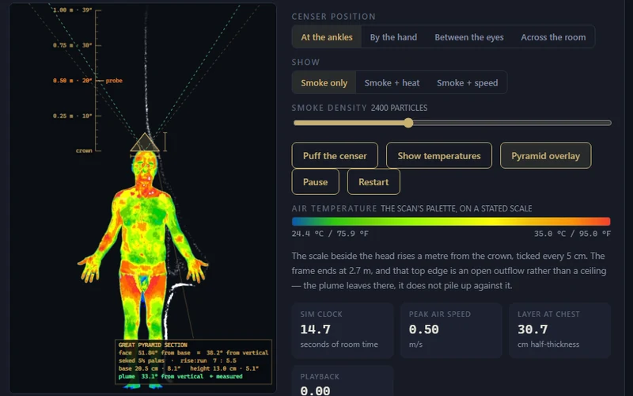
The Body's Own Weather — the plume you stand in
Stand still in a quiet room and a two-metre weather system forms around you: air warmed
by skin climbs the body and sheds rotating rings above your head. Simulated live on a
real thermal scan, from measured skin temperatures — 35.0 °C at the throat,
29.8 °C at the sole — and traced with incense smoke. Why infrared is the
larger channel and still moves none of the air; why neither Rankine nor Oseen is the
shape of a shed vortex; and a Great Pyramid laid on the crown, measured against the
plume, and found not to fit.
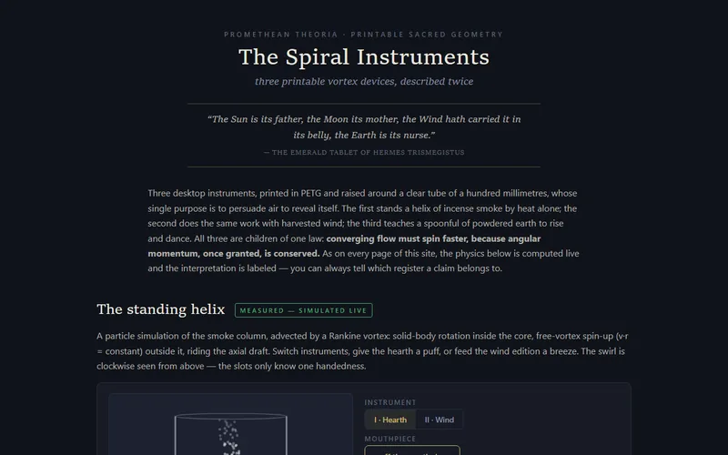
The Spiral Instruments — four vortex devices, two lenses
A passive incense tornado, built and lit: twelve tangential slots wrap the plume into a standing
clockwise helix, simulated live as a Rankine vortex. Puff the mouthpiece, feed the wind edition
a breeze, drag the vane angle — and read the field note where the built instrument
overruled the drawing. New: a hand-pumped smoke-ring tube — press the key and watch
vortex rings climb.
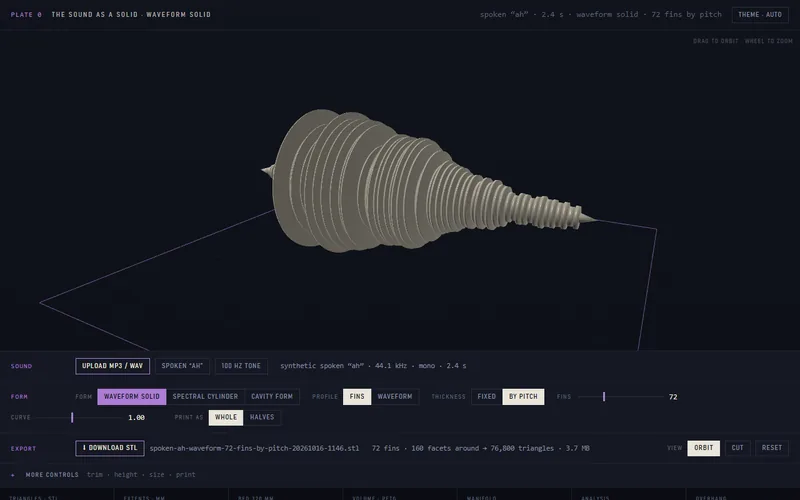
Volumetric Sound Forms — print what you hear
Upload an mp3 or wav and print its form. The waveform solid spins the waveform about its time axis —
every moment a thin disc as wide as it is loud and as thick as its pitch is low, threaded on a spindle, printed as two halves without
supports. The spectral cylinder stands the spectrogram up; the cavity form plays the sound into a rigid
vessel and makes the loudest air of its standing waves solid. Watertight STL, every triangle checked
before download. Nothing leaves your browser.
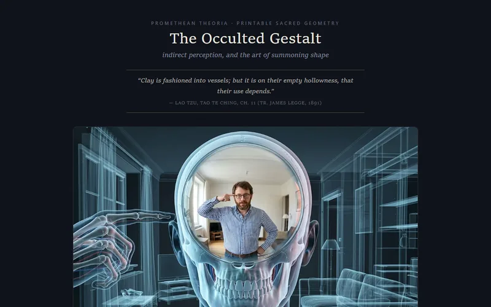
The Occulted Gestalt — indirect perception & shape summoning
Edges no one drew, solids no one printed. Six constructions of the visual system —
Kanizsa, Rubin, Necker, a Dalmatian-style two-tone, the blind spot — then a live
Kanizsa engine to break, dots that become a solid only when they turn, how artists and
swindlers have used the same levers, and four printable ribbon sculptures whose solids
exist only in the viewer: orbit them in 3D, summon the hidden form, download the STLs.
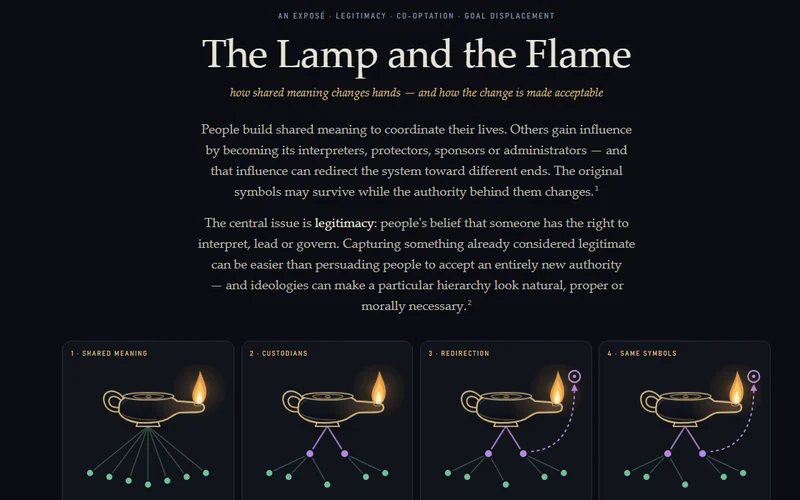
The Lamp and the Flame — how shared meaning changes hands
An exposé on legitimacy and co-optation: how communities build shared meaning, how its
interpreters, sponsors and administrators come to control it, and how the change is made acceptable.
Six roots, six stages, one lifecycle, and a casebook from Pope Gregory's rededicated temples to
Wikipedia's bots — with a field kit for telling capture from ordinary change.
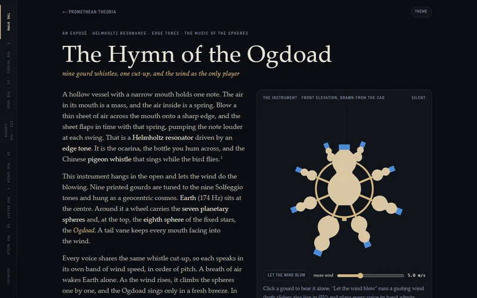
The Hymn of the Ogdoad — a wind-blown Helmholtz choir
Nine printed pigeon-whistle gourds tuned to the Solfeggio tones and hung as a geocentric cosmos:
Earth at the centre, the seven planetary spheres on a wheel, the Ogdoad at the top. One shared
cut-up makes the wind wake them in order of pitch, so a breath stirs Earth and only a fresh breeze
reaches the eighth sphere. Live Helmholtz bench, jet-and-labium animation, wind-band ladder,
a gusting synth, and the Poimandres ascent the layout follows.